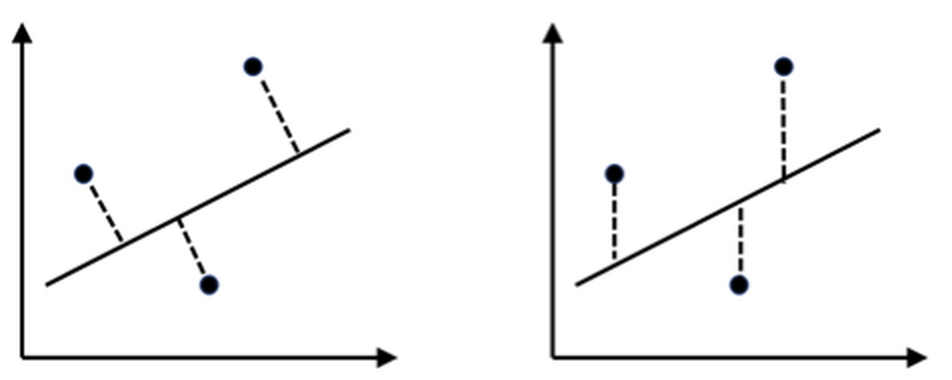
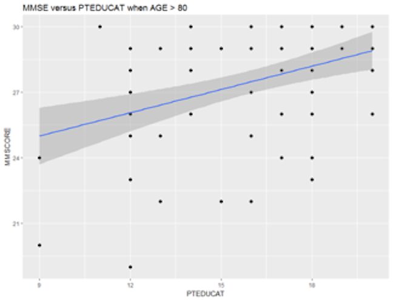
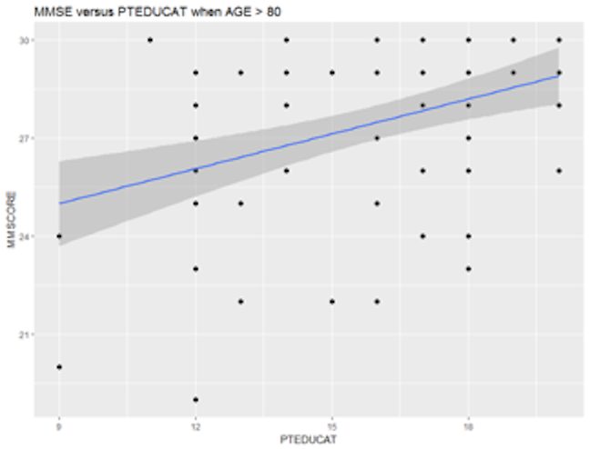
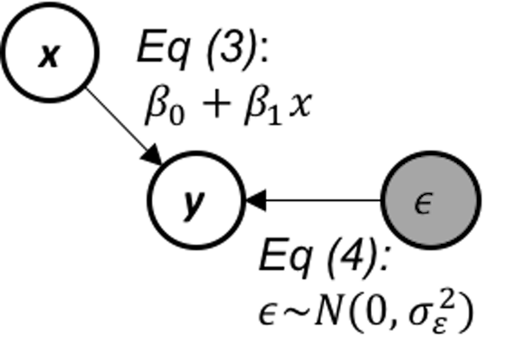
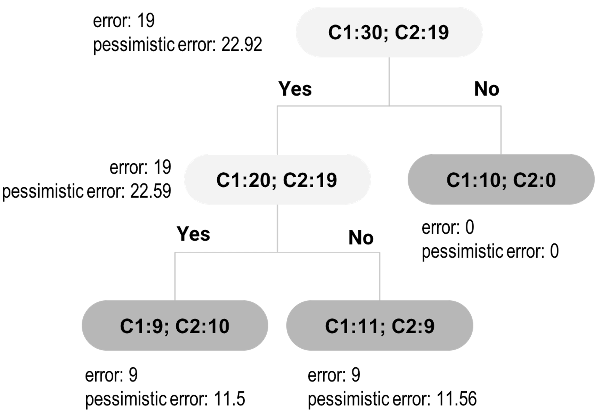

Chapter 2. Abstraction: Regression & Tree Models
Overview
Chapter 2 is about Abstraction. It concerns how we model and formulate a problem using specific mathematical models. Abstraction is powerful. It begins with identification of a few main entities from the problem, and continues to characterize their relationships. Then we focus on the study of these interconnected entities as a pure mathematical system. Consequences can be analytically established within this abstracted framework, while a phenomenon in a concerned context could be identified as special instances, or manifestations, of the abstracted model. In other words, by making abstraction of a real-world problem, we free ourselves from the application context that is usually unbounded and not well defined.
People often adopt a blackbox view of a real-world problem, as shown in Figure 3. There is one (or more) key performance metrics of the system, called the output variable5 Denoted as \(y\), e.g., the yield of a chemical process, the mortality rate of an ICU, the GDP of a nation, etc., and there is a set of input variables6 Denoted as \(x_{1}, x_{2}, \ldots, x_{p}\); also called predictors, covariates, features, and, sometimes, factors. that may help us predict the output variable. These variables are the few main entities identified from the problem, and how the input variables impact the output variable is one main type of relationship we develop models to characterize.
Figure 3: The blackbox nature of many data science problems
These relationships are usually unknown, due to our lack of understanding of the system. It is not always plausible or economically feasible to develop a Newtonian style characterization of the system7 I.e., using differential equations.. Thus, statistical models are needed. They collect data from this blackbox system and build models to characterize the relationship between the input variables and the output variable. Generally, there are two cultures for statistical modeling8 Breiman, L., * Statistical Modeling: The Two Cultures,* Statistical Science, Volume 16, Issue 3, 199-231, 2001.: One is the data modeling culture, while another is the algorithmic modeling culture. Linear regression models are examples of the data modeling culture; decision tree models are examples of the algorithmic modeling culture.
Two goals are shared by the two cultures: (1) to understand the relationships between the predictors and the output, and (2) to predict the output based on the predictors. The two also share some common criteria to evaluate the success of their models, such as the prediction performance. Another commonality they share is a generic form of their models
\[\begin{equation} \small y=f(\boldsymbol{x})+\epsilon, \tag{1} \end{equation}\]
where \(f(\boldsymbol{x})\) reflects the signal part of \(y\) that can be ascertained by knowing \(\boldsymbol{x}\), and \(\epsilon\) reflects the noise part of \(y\) that remains uncertain even when we know \(x\). To better illustrate this, we could annotate the model form in Eq. (1) as9 An interesting book about the antagonism between signal and noise: Silver, N., The Signal and the Noise: Why So Many Predictions Fail–but Some Don’t, Penguin Books, 2015. The author’s prediction model, however, failed to predict Donald Trump’s victory of the 2016 US Election.
\[\begin{equation} \small \underbrace{y}_{data} = \underbrace{f(\boldsymbol{x})}_{signal} + \underbrace{\epsilon}_{noise}, \tag{2} \end{equation}\]
The two cultures differ in their ideas about how to model these two parts. A brief illustration is shown in Table 1.
Table 1: Comparison between the two cultures of models
| \(f(\boldsymbol{x})\) | \(\epsilon\) | Ideology | |
|---|---|---|---|
| Data Modeling | Explicit form (e.g., linear regression). | Statistical distribution (e.g., Gaussian). | Imply Cause and effect; uncertainty has a structure. |
| Algorithmic Modeling | Implicit form (e.g., tree model). | Rarely modeled as structured uncertainty; taken as meaningless noise. | More focus on prediction; to fit data rather than to explain data. |
An illustration of the data modeling, using linear regression model, is shown in Figure 4. To develop such a model, we need efforts in two endeavors: the modeling of the signal, and the modeling of the noise (also called errors). It was probably the modeling of the errors, rather than the modeling of the signal, that eventually established a science: Statistics10 Errors, as the name suggests, are embarrassment to a theory that claims to be rational. Errors are irrational, like a crack on the smooth surface of rationality. But rationally, if we could find a law of errors, we then find the law of irrationality. With that, once again rationality trumps irrationality, and the crack is sealed..
Figure 4: Illustration of the ideology of data modeling, i.e., data is used to calibrate, or, estimate, the parameters of a pre-specified mathematical structure
One only needs to take a look at the beautiful form of the normal distribution (and notice the name as well) to have an impression of its grand status as the law of errors. Comparing with other candidate forms that historically were its competitors, this concentrated, symmetrical, round and smooth form seems a more rational form that a law should take, i.e., see Figure 5.

Figure 5: Hypothesized laws of errors, including the normal distribution (also called the Gaussian distribution, developed by Gauss in 1809) and some of its old rivalries
The \(\epsilon\) in Eq. (1) is often called the error term, noise term, or residual term. \(\epsilon\) is usually modeled as a Gaussian distribution with mean as \(0\). The mean has to be \(0\); otherwise, it contradicts with the name error. \(f(\boldsymbol{x})\) is also called the model of the mean structure11 To see that, notice that \(\mathrm{E}{(y)} = \mathrm{E}{[f(\boldsymbol{x}) + \epsilon]} = \mathrm{E}{[f(\boldsymbol{x})]} + \mathrm{E}{[\epsilon]}\). Since \(\mathrm{E}{(\epsilon)} = 0\) and \(f(\boldsymbol{x})\) is not a random variable, we have \(\mathrm{E}{(y)} = f(\boldsymbol{x})\). Thus, \(f(\boldsymbol{x})\) essentially predicts the mean of the output variable..
Regression models
Rationale and formulation
Let’s consider a simple regression model, where there is only one predictor \(x\) to predict the outcome \(y\). Linear regression model assumes a linear form of \(f(x)\)
\[\begin{equation} \small f(x)=\beta_{0}+\beta_{1} x , \tag{3} \end{equation}\]
where \(\beta_0\) is called the intercept, and \(\beta_1\) is called the slope. Both are also called regression coefficients, or more generally, parameters.
And \(\epsilon\) is modeled as a normal distribution12 I.e., could be other types of distributions, but normal distribution is the norm. with mean \(0\),
\[\begin{equation} \small \epsilon \sim N\left(0, \sigma_{\varepsilon}^{2}\right), \tag{4} \end{equation}\]
where \(\sigma_{\varepsilon}^{2}\) is the variance of the error.
For any given value of \(x\), we know the model of \(y\) is
\[\begin{equation} \small y = \beta_{0}+\beta_{1}x + \epsilon. \tag{5} \end{equation}\]
As Figure 6 reveals, in linear regression model, \(y\) is not modeled as a numerical value, but as a distribution. In other words, \(y\) itself is treated as a random variable. Its distribution’s mean is modeled by \(x\) and the variance is inherited from \(\epsilon\). Knowing the value of \(x\) helps us to determine the location of this distribution, but not the shape—the shape is always fixed.
Figure 6: In a linear regression model, \(y\) is modeled as a distribution as well

To make a prediction of \(y\) for any given \(x\), \(\beta_{0}+\beta_{1}x\) comes as a natural choice. It is too natural that it is often unnoticed or unquestioned. Nonetheless, to predict a random variable, using its mean is the “best” choice, but it is not the only possibility, as Figure 6 reveals that \(y\) itself is a random variable, and to predict a random variable, we could also use a confidence interval instead of a point estimate. It depends on what you’d like to predict. If the goal is to predict what is the most likely value for \(y\) given \(x\), then the best guess is \(\beta_{0}+\beta_{1}x\).13 An important job for statisticians is to prove some ideas are our best choices, i.e., by showing that these choices are optimal decisions under some specific conditions (accurately defined by mathematical terms). It is often that intuitions come before proofs, so many theories are actually developed retrospectively.
There are more assumptions that have been made to enable the model in Eq. (5).
- There is a linear relationship between \(x\) and \(y\). And this linear relationship remains the same for all the values of \(x\). This is often referred to as a global relationship between \(x\) and \(y\). Sometimes this assumption is considered strong, e.g., as shown in Figure 7, in drug research it is often found that the dose (\(x\)) is related to the effect of the drug (\(y\)) in a varying manner that depends on the value of \(x\). Still, from Figure 7 we can see that the linear line captures an essential component in the relationship between \(x\) and \(y\), providing a good statistical approximation. Regression models that capture locality in the relationship between \(x\) and \(y\) are introduced in Chapter 9.
Figure 7: Complex relationship between dose (\(x\)) and drug response (\(y\)), while the linear line does provide a good statistical approximation
- The model acknowledges a degree of unpredictability of \(y\). Eq. (5) indicates that \(y\) is generated by a combination of the signal (i.e., \(\beta_{0}+\beta_{1}x\)) and the noise (i.e., \(\epsilon\)). Since we could never predict noise, we compute a metric called R-squared to quantify the predictability of a model
\[\begin{equation} \small \text{R-squared} = \frac{\sigma_{y}^{2}-\sigma_{\varepsilon}^{2}}{\sigma_{y}^{2}}. \tag{6} \end{equation}\] Here, \(\sigma_{y}^{2}\) is the variance of \(y\). The R-squared ranges from \(0\) (zero predictability) to \(1\) (perfect predictability).
- The significance of \(x\) in predicting \(y\), and the accuracy of \(x\) in predicting \(y\), are two different concepts. A predictor \(x\) could be inadequate in predicting \(y\), i.e., the R-squared could be as low as \(0.1\), but it still could be statistically significant. In other words, the relation between \(x\) and \(y\) is not strong, but it is not spurious either. This often happens in social science research and education research projects. Some scenarios are shown in Figure 8.

Figure 8: Significance vs. accuracy
- The noise is usually modeled as a normal distribution, but this assumption could be relaxed. A detailed discussion about how to check the normality assumption in data analysis can be found in Chapter 5.
Theory and method
Parameter estimation. To estimate a model is to estimate its parameters, i.e., for the model shown in Eq. (5), unknown parameters include \(\beta_{0}\), \(\beta_{1}\), and \(\sigma_{\varepsilon}^{2}\). Usually, we estimate the regression coefficients first. Then, as shown in Figure 4, errors could be computed, and further, \(\sigma_{\varepsilon}^{2}\) could be estimated14 I.e., as a standard practice of sample variance estimation by taking the residuals (i.e., \(\epsilon_1\), \(\epsilon_2\) and \(\epsilon_3\)) as samples of the population of error..
A training dataset is collected to estimate the parameters. The basic idea is that the best estimate should lead to a line, as shown in Figure 4, that fits the training data as close as possible. To quantify this quality of fitness of a line, two principles are shown in Figure 9: one based on perpendicular offset (left), while another one based on vertical offset (right). History of statistics has chosen the vertical offset as a more favorable approach, since it leads to tractability in analytic forms15 When there were no computers yet, analytic tractability was, and still is, held as a sacred quality of a model..
Figure 9: Two principles to fit a linear regression model: (left) perpendicular offsets; (right) vertical offsets. The distances between the dots (the training data) with the line (the trained model) provide a quantitative metric of how well the model fits the data.
The principle of minimizing vertical offsets leads to the least-squares estimation of linear regression models. We can exercise the least squares estimation using the simple regression model shown in Eq. (5). The objective, based on the principle suggested in Figure 9 (right), is to find the line that minimizes the sum of the squared of the vertical derivations of the observed data points from the line.
Suppose that we have collected \(N\) data points, denoted as, \(\left(x_{n}, y_{n}\right)\) for \(n=1,2, \dots, N\).16 Data is paired, i.e., \(y_{n}\) corresponds to \(x_{n}\). For each data point, i.e., the \(n_{th}\) data point, the residual \(\epsilon_{n}\) is defined as
\[\begin{equation} \small \epsilon_{n} = y_{n}-\left(\beta_{0}+\beta_{1} x_{n}\right). \tag{7} \end{equation}\]
Then, we define the sum of the squared of the vertical derivations of the observed data points from the line as
\[\begin{equation} \small l\left(\beta_{0}, \beta_{1}\right)=\sum_{n=1}^{N}\epsilon_{n}^2. \tag{8} \end{equation}\]
Plugging Eq. (7) in Eq. (8) we have
\[\begin{equation} \small l\left(\beta_{0}, \beta_{1}\right)=\sum_{n=1}^{N}\left[y_{n}-\left(\beta_{0}+\beta_{1} x_{n}\right)\right]^{2}. \tag{9} \end{equation}\]
To estimate \(\beta_{0}\) and \(\beta_{1}\) is to minimize this least squares loss function \(l\left(\beta_{0}, \beta_{1}\right)\). This is an unconstrained continuous optimization problem. We take derivatives of \(l\left(\beta_{0}, \beta_{1}\right)\) regarding the two parameters and set them to be zero, to derive the estimation equations—this is a common practice of the First Derivative Test, illustrated in Figure 10.
 Figure 10: Illustration of the First Derivative Test in optimization, i.e., the optimal solution would lead the first derivative to be zero. It is widely used in statistics and machine learning to find optimal solutions of some model formulations. More applications of this technique can be found in later chapters.
Figure 10: Illustration of the First Derivative Test in optimization, i.e., the optimal solution would lead the first derivative to be zero. It is widely used in statistics and machine learning to find optimal solutions of some model formulations. More applications of this technique can be found in later chapters.
\[\begin{equation*} \small \frac{\partial l\left(\beta_{0}, \beta_{1}\right)}{\partial \beta_{0}}=-2 \sum_{n=1}^{N}\left[y_{n}-\left(\beta_{0}+\beta_{1} x_{n}\right)\right]=0, \end{equation*}\] \[\begin{equation*} \small \frac{\partial l\left(\beta_{0}, \beta_{1}\right)}{\partial \beta_{1}}=-2 \sum_{n=1}^{N} x_{n}\left[y_{n}-\left(\beta_{0}+\beta_{1} x_{n}\right)\right]=0. \end{equation*}\]
These two could be rewritten in a more succinct way
\[\begin{equation*} \small \left[ \begin{array}{cc}{N} & {\sum_{n=1}^{N} x_{n}} \\ {\sum_{n=1}^{N} x_{n}} & {\sum_{n=1}^{N} x_{n}^{2}}\end{array}\right] \left[ \begin{array}{c}{\beta_{0}} \\ {\beta_{1}}\end{array}\right]=\left[ \begin{array}{c}{\sum_{n=1}^{N} y_{n}} \\ {\sum_{n=1}^{N} x_{n} y_{n}}\end{array}\right]. \end{equation*}\]
We solve these two equations and derive the estimators of \(\beta_{0}\) and \(\beta_{1}\), denoted as \(\hat{\beta}_{0}\) and \(\hat{\beta}_{1}\), respectively, as
\[\begin{equation} \small \begin{aligned} &\hat{\beta}_{1}=\frac{\sum_{n=1}^{N}\left(x_{n}-\overline{x}\right)\left(y_{n}-\overline{y}\right)}{\sum_{n=1}^{N} x_{n}^{2}-N \overline{x}^{2}}, \\ &\hat{\beta}_{0}= \overline{y} - \hat{\beta}_{1} \overline{x}. \end{aligned} \tag{10} \end{equation}\]
where \(\overline{x}\) and \(\overline{y}\) are the sample mean of the two variables, respectively.
There is a structure hidden inside Eq. (10). Note that the estimator \(\hat{\beta}_{1}\) can be rewritten as
\[\begin{equation} \small \hat{\beta}_{1}=\frac{\sum_{n=1}^{N}\left(x_{n}-\overline{x}\right)\left(y_{n}-\overline{y}\right)}{N-1} \Big/ \frac{\sum_{n=1}^{N} x_{n}^{2}-N \overline{x}^{2}}{N-1}, \tag{11} \end{equation}\]
and note that the sample variance of \(x\) is defined as
\[\begin{equation*} \small \operatorname{var}(x)=\frac{\sum_{n=1}^{N} x_{n}^{2}-N \overline{x}^{2}}{N-1}, \end{equation*}\]
while the numerator in Eq. (11) is called the sample covariance17 The covariance is a measure of the joint variability of two random variables. Denoted as \(\operatorname{cov}(x, y)\), the larger the covariance, the stronger the two variables interact..
Thus, we can rewrite the estimators of \(\beta_{1}\) and \(\beta_{0}\) as
\[\begin{equation} \small \begin{aligned} &\hat{\beta}_{1}=\frac{\operatorname{cov}(x, y)}{\operatorname{var}(x)}, \\ &\hat{\beta}_{0} = \overline{y} - \hat{\beta}_{1} \overline{x}. \end{aligned} \tag{12} \end{equation}\]
A small data example. Let’s practice the estimation method using a simple example. The dataset is shown in Table 2.
Table 2: An example dataset
| \(x\) | \(1\) | \(3\) | \(3\) | \(5\) | \(5\) | \(6\) | \(8\) | \(9\) |
|---|---|---|---|---|---|---|---|---|
| \(y\) | \(2\) | \(3\) | \(5\) | \(4\) | \(6\) | \(5\) | \(7\) | \(8\) |
Following Eq. (10) we can get \(\beta_0 = -1.0714\) and \(\beta_1 = 1.2143\). The R codes to verify your calculation are shown below.
# Simple example of regression with one predictor
data = data.frame(rbind(c(1,2),c(3,3),c(3,5),
c(5,4),c(5,6),c(6,5),
c(8,7),c(9,8)))
colnames(data) = c("Y","X")
str(data)
lm.YX <- lm(Y ~ X, data = data)
summary(lm.YX)Extension to multivariate regression model. Consider a more general case where there are more than one predictor
\[\begin{equation} \small y=\beta_{0}+\sum_{i=1}^{p} \beta_{i} x_{i}+\varepsilon. \tag{13} \end{equation}\]
To fit this multivariate linear regression model with \(p\) predictors, we collect \(N\) data points, denoted as
\[\begin{equation*} \small \boldsymbol{y}=\left[ \begin{array}{c}{y_{1}} \\ {y_{2}} \\ {\vdots} \\ {y_{N}}\end{array}\right], \text { } \boldsymbol{X}=\left[ \begin{array}{ccccc}{1} & {x_{11}} & {x_{21}} & {\cdots} & {x_{p 1}} \\ {1} & {x_{12}} & {x_{22}} & {\cdots} & {x_{p 2}} \\ {\vdots} & {\vdots} & {\vdots} & {\vdots} & {\vdots} \\ {1} & {x_{1 N}} & {x_{2 N}} & {\cdots} & {x_{p N}}\end{array}\right]. \end{equation*}\]
where \(\boldsymbol{y} \in R^{N \times 1}\) denotes for the \(N\) measurements of the outcome variable, and \(\boldsymbol{X} \in R^{N \times(p+1)}\) denotes for the data matrix that includes the \(N\) measurements of the \(p\) input variables and the intercept term, \(\beta_{0}\), i.e., the first column of \(\boldsymbol{X}\) corresponds to \(\beta_{0}\).18 Again, the data is paired, i.e., \(y_{n}\) corresponds to \(\boldsymbol{x}_n\) that is the \(n_{th}\) row of the matrix \(\boldsymbol{X}\).
To estimate the regression coefficients in Eq. (13), again, we use the least squares estimation method. The first step is to calculate the sum of the squared of the vertical derivations of the observed data points from “the line”19 Here, actually, a hyperplane.. Following Eq. (7), we can define the residual as
\[\begin{equation} \small \epsilon_{n} = y_n - \left(\beta_{0}+\sum_{i=1}^{p} \beta_{i} x_{in}\right). \tag{14} \end{equation}\]
Then, following Eq. (8), the sum of the squared of the vertical derivations of the observed data points from “the line” is
\[\begin{equation} \small l\left(\beta_{0}, ..., \beta_{p}\right)=\sum_{n=1}^{N}\epsilon_{n}^2. \tag{15} \end{equation}\]
This is again an unconstrained continuous optimization problem, that could be solved by the same procedure we have done for the simple linear regression model. Here, we show how a vector-/matrix-based representation of this derivation process could make things easier.
Let’s write up the regression coefficients and residuals in vector forms as
\[\begin{equation*} \small \boldsymbol{\beta}=\left[ \begin{array}{c}{\beta_{0}} \\ {\beta_{1}} \\ {\vdots} \\ {\beta_{p}}\end{array}\right], \text { and } \boldsymbol{\varepsilon}=\left[ \begin{array}{c}{\varepsilon_{1}} \\ {\varepsilon_{2}} \\ {\vdots} \\ {\varepsilon_{N}}\end{array}\right]. \end{equation*}\]
Here, \(\boldsymbol{\beta} \in R^{(p+1) \times 1}\) denotes for the regression parameters and \(\boldsymbol{\varepsilon} \in R^{N \times 1}\) denotes for the \(N\) residuals which are assumed to follow a normal distribution with mean as zero and variance as \(\sigma_{\varepsilon}^{2}\).
Then, based on Eq. (14), we rewrite \(\boldsymbol{\varepsilon}\) as \[\begin{equation*} \small \boldsymbol{\varepsilon} = \boldsymbol{y} - \boldsymbol{X} \boldsymbol{\beta}. \end{equation*}\]
Eq. (15) could be rewritten as
\[\begin{equation} \small l(\boldsymbol{\beta})=(\boldsymbol{y}-\boldsymbol{X} \boldsymbol{\beta})^{T}(\boldsymbol{y}-\boldsymbol{X} \boldsymbol{\beta}). \tag{16} \end{equation}\]
To estimate \(\boldsymbol{\beta}\) is to solve the optimization problem
\[\begin{equation*} \small \min _{\boldsymbol{\beta}}(\boldsymbol{y}-\boldsymbol{X} \boldsymbol{\beta})^{T}(\boldsymbol{y}-\boldsymbol{X} \boldsymbol{\beta}). \end{equation*}\]
To solve this problem, we can take the gradients of the objective function regarding \(\boldsymbol{\beta}\) and set them to be zero
\[\begin{equation*} \small \frac{\partial(\boldsymbol{y}-\boldsymbol{X} \boldsymbol{\beta})^{T}(\boldsymbol{y}-\boldsymbol{X} \boldsymbol{\beta})}{\partial \boldsymbol{\beta}}=0, \end{equation*}\]
which gives rise to the equation
\[\begin{equation*} \small \boldsymbol{X}^{T}(\boldsymbol{y}-\boldsymbol{X} \boldsymbol{\beta})=0. \end{equation*}\]
This leads to the least squares estimator of \(\boldsymbol{\beta}\) as
\[\begin{equation} \small \widehat{\boldsymbol{\beta}}=\left(\boldsymbol{X}^{T} \boldsymbol{X}\right)^{-1} \boldsymbol{X}^{T} \boldsymbol{y}. \tag{17} \end{equation}\]
A resemblance can be easily detected between the estimator in Eq. (17) with Eq. (12), by noticing that \(\boldsymbol{X}^{T} \boldsymbol{y}\) reflects the correlation20 I.e., corresponds to \(\operatorname{cov}(x, y)\). between predictors and output, and \(\boldsymbol{X}^{T} \boldsymbol{X}\) reflects the variability21 I.e., corresponds to \(\operatorname{var}(x)\). of the predictors.
Eq. (17) may come as a surprise to some readers. The regression coefficients, \(\boldsymbol{\beta}\), by their definition, are supposed to only characterize the relationship between \(\boldsymbol{x}\) and \(y\). However, from Eq. (17), it is clear that the variability of \(\boldsymbol{x}\) matters. This is not a contradiction. \(\boldsymbol{\beta}\) and \(\widehat{\boldsymbol{\beta}}\) are two different entities: \(\boldsymbol{\beta}\) is a theoretical concept, while \(\widehat{\boldsymbol{\beta}}\) is a statistical estimate. Statisticians have established theories22 E.g, interested readers may read this book: Ravishanker, N. and Dey, D.K., A First Course in Linear Model Theory, Chapman & Hall/CRC, 2001. to study how well \(\widehat{\boldsymbol{\beta}}\) estimates \(\boldsymbol{\beta}\). From Eq. (17), it is clear that where we observe the linear system23 I.e., from which \(\boldsymbol{x}\) we take measurement of \(y\)’s. matters to the modeling of the system. This is one main motivation of the area called the Design of Experiments that aims to identify the best locations of \(\boldsymbol{x}\) from which we collect observations of the outcome variable, in order to achieve the best parameter estimation results.
By generalizing the result in Figure 6 on the multivariate regression, we can see that \(\boldsymbol{y}\) is a random vector24 “MVN” stands for Multivariate Normal Distribution. See Appendix for background knowledge on MVN.,
\[\begin{equation} \boldsymbol{y} \sim \text{MVN}\left(\boldsymbol{X}^{T}\boldsymbol{\beta},\sigma_{\varepsilon}^{2} \boldsymbol{I}\right). \end{equation}\]
And \(\widehat{\boldsymbol{\beta}}\), as shown in Eq. (17), is essentially a function of \(\boldsymbol{y}\). Thus, \(\widehat{\boldsymbol{\beta}}\) is a random vector as well. In other words, \(\widehat{\boldsymbol{\beta}}\) has a distribution. Because of the normality of \(\boldsymbol{y}\), \(\widehat{\boldsymbol{\beta}}\) is also distributed as a normal distribution.
The mean of \(\widehat{\boldsymbol{\beta}}\) is \(\boldsymbol{\beta}\), because
And the covariance matrix of \(\widehat{\boldsymbol{\beta}}\) is
Because
\[\begin{equation*} \small \operatorname{cov}(\boldsymbol{y}) = \sigma_{\varepsilon}^{2} \boldsymbol{I}, \end{equation*}\]
we have
\[\begin{equation*} \small \operatorname{cov}(\widehat{\boldsymbol{\beta}}) = \sigma_{\varepsilon}^{2}\left(\boldsymbol{X}^{T} \boldsymbol{X}\right)^{-1}. \end{equation*}\]
Thus, we have derived that
\[\begin{equation} \small \boldsymbol{y} \sim \text{MVN}\left(\boldsymbol{X}^{T}\boldsymbol{\beta},\sigma_{\varepsilon}^{2} \boldsymbol{I}\right) \Rightarrow \widehat{\boldsymbol{\beta}} \sim \text{MVN}\left[\boldsymbol{\beta},\sigma_{\varepsilon}^{2} \left(\boldsymbol{X}^{T} \boldsymbol{X}\right)^{-1}\right]. \tag{18} \end{equation}\]
For each individual parameter \(\beta_i\), we can infer that
\[\begin{equation} \small \hat{\beta}_{i} \sim N\left(\beta_{i}, \frac{\sigma_{\varepsilon}^{2}}{\boldsymbol{x}_{i}^T \boldsymbol{x}_{i}}\right) \tag{19} \end{equation}\]
Hypothesis testing of regression parameters. Eq. (19) lays the foundation for developing hypothesis testing of the regression parameters.
A hypothesis testing begins with a null hypothesis, e.g.,
\[\begin{equation*} \small H_{0} : \beta_{i}=0. \end{equation*}\]
 Figure 11: The distribution of \(\hat{\beta}_{i}\)
Figure 11: The distribution of \(\hat{\beta}_{i}\)
If the null hypothesis is true, then based on Eq. (19), we have
\[\begin{equation} \small \hat{\beta}_{i} \sim N\left(0, \frac{\sigma_{\varepsilon}^{2}}{\boldsymbol{x}_{i}^T \boldsymbol{x}_{i}}\right). \tag{20} \end{equation}\]
This distribution is shown in Figure 11. It is a graphical display of the possibilities of the values of \(\hat{\beta}_{i}\) that we may observe, if \(H_{0}\) is true.
Then we can derive further implications. Based on Figure 11, we could define a range of \(\hat{\beta}_{i}\) that we believe as most plausible25 Note that I use the word “plausible” instead of “possible.” Any value is always possible, according to Eq. (20). But the possibility is not equally distributed, as shown in Figure 11. Some values are more possible than others.. In other words, if the null hypothesis is true, then it is normal to see \(\hat{\beta}_{i}\) in this range. This thought leads to Figure 12. This is what is supposed to be, if the null hypothesis is true. And any value outside of this range is considered as a result of rare chance, noise, or abnormality. We define a level of probability that represents our threshold of rare chance. We coin this threshold level as \(\alpha\).
 Figure 12: The framework of hypothesis testing
Figure 12: The framework of hypothesis testing
With the threshold level \(\alpha\), we conclude that any value of \(\hat{\beta}_{i}\) that falls outside of the range is unlikely. If we see \(\hat{\beta}_{i}\) falls outside of the range, we reject the null hypothesis \(H_{0}\), based on the conflict between “what is supposed to be” and “what happened to be.”26 I.e., what we have assumed in \(H_{0}\) is what is supposed to be, and what we have observed in data is what happened to be. This framework is shown in Figure 12.
Hypothesis testing is a decision made with risks. We may be wrong: even if the null hypothesis is true, there is still a small probability, \(\alpha\), that we may observe \(\hat{\beta}_{i}\) falls outside of the range. But this is not a blind risk. It is a different kind of risk: we have scientifically derived the risk, understood it well, and accepted the risk as a cost.
R Lab
In this section, we illustrate step-by-step a pipeline of R codes to use the linear regression model in real-world data analysis. Real-world data analysis is challenging. The real-world means objectivity, but the real-worldliness suggests subjectivity. The purpose of the R codes in this book serves a similar function as a diving coach who dives into the water to show how the action should be done, but the real-worldliness can only be felt if you also dive into the water and feel the thrill by yourself. Our data analysis examples try to preserve a certain degree of the real-worldliness that embodies both statistical regularities and realistic irregularities27 Prof. George Box once said, “all models are wrong, some are useful.”. Only the challenge in many real applications is that the boundary between the statistical regularities and realistic irregularities is unclear and undefined.
Having said that, making informed decisions by drawing from rigorous theories, while at the same time, maintaining a critical attitude about theory, are both needed in practices of data analytics.
Here, our data is from a study of Alzheimer’s disease28 Data were obtained from the Alzheimer’s Disease Neuroimaging Initiative (ADNI) database (http://adni.loni.usc.edu). The ADNI was launched in 2003 as a public-private partnership, led by Principal Investigator Michael W. Weiner, MD. The primary goal of ADNI has been to test whether serial magnetic resonance imaging (MRI), positron emission tomography (PET), other biological markers, and clinical and neuropsychological assessment can be combined to measure the progression of mild cognitive impairment (MCI) and early Alzheimer’s disease (AD). that collected some demographics, genetic, and neuroimaging variables from hundreds of subjects. The goal of this dataset is to use these predictors to predict some outcome variables, e.g., one is called the Mini-Mental State Examination (MMSCORE), which is a clinical score for determining Alzheimer’s disease. It ranges from \(1\) to \(30\), while \(25\) to \(30\) is normal, \(20\) to \(24\) suggests mild dementia, \(13\) to \(20\) suggests moderate dementia, and less than \(12\) indicates severe dementia.
The 5-Step R Pipeline. We start with a pipeline of conducting linear regression analysis in R with 5 steps. Please keep in mind that these 5 steps are not a fixed formula: it is a selection of the authors to make it simple.
Step 1 loads the data into the R work environment.
# Step 1 -> Read data into R workstation
# RCurl is the R package to read csv file using a link
library(RCurl)
url <- paste0("https://raw.githubusercontent.com",
"/analyticsbook/book/main/data/AD.csv")
AD <- read.csv(text=getURL(url))
# str(AD)Step 2 is for data preprocessing. This is a standard chunk of code, and it will be used again in future chapters. As this is the first time we see it, here, let’s break it into several pieces. The first piece is to create your X matrix (predictors) and Y vector (outcome variable). The use of X for predictors and Y for outcome are common practice.
# Step 2 -> Data preprocessing.
# Remove variable DX_bl
AD <- AD[ , -which(names(AD) %in% c("DX_bl"))]
# Pick up the first 15 variables for predictors
X <- AD[,1:15]
# Pick up the variable MMSCORE for outcome
Y <- AD$MMSCOREThen, we make a data.frame to enclose both the predictors and outcome variable together. Many R functions presume the data are packaged in this way.
data <- data.frame(X,Y)
names(data)[16] <- c("MMSCORE")Then, we split the data into two parts29 Usually, there is a client who splits the data for you, sends you the training data only, and withholds the testing data. When you submit your model trained on the training data, the client could verify your model using the testing data. Here, even the dataset we are working on is already the training data, we still split this nominal training data into halves and use one half as the actual training data and the other half as the testing data. Why do we do so? Please see Chapter 5.. We name the two parts as training data and testing data, respectively. The training data is to fit the model. The testing data is excluded from the model training: it will be used to test the model after the final model has been selected using the training data solely.
set.seed(1) # generate the same random sequence
# Create a training data (half the original data size)
train.ix <- sample(nrow(data),floor( nrow(data)/2) )
data.train <- data[train.ix,]
# Create a testing data (half the original data size)
data.test <- data[-train.ix,]Step 3 builds up a linear regression model. We use the lm() function to fit the regression model30 Use lm() for more information..
# Step 3 -> Use lm() function to build a full
# model with all predictors
lm.AD <- lm(MMSCORE ~ ., data = data.train)
summary(lm.AD)The result is shown in below
## Call:
## lm(formula = MMSCORE ~ ., data = data.train)
##
## Residuals:
## Min 1Q Median 3Q Max
## -6.3662 -0.8555 0.1540 1.1241 4.2517
##
## Coefficients:
## Estimate Std. Error t value Pr(>|t|)
## (Intercept) 17.93920 2.38980 7.507 1.16e-12 ***
## AGE 0.02212 0.01664 1.329 0.185036
## PTGENDER -0.11141 0.22077 -0.505 0.614280
## PTEDUCAT 0.16943 0.03980 4.257 2.96e-05 ***
## FDG 0.65003 0.17836 3.645 0.000328 ***
## AV45 -1.10136 0.62510 -1.762 0.079348 .
## HippoNV 7.66067 1.68395 4.549 8.52e-06 ***
## e2_1 -0.26059 0.36036 -0.723 0.470291
## e4_1 -0.42123 0.24192 -1.741 0.082925 .
## rs3818361 0.24991 0.21449 1.165 0.245120
## rs744373 -0.25192 0.20787 -1.212 0.226727
## rs11136000 -0.23207 0.21836 -1.063 0.288926
## rs610932 -0.11403 0.21906 -0.521 0.603179
## rs3851179 0.16251 0.21402 0.759 0.448408
## rs3764650 0.47607 0.24428 1.949 0.052470 .
## rs3865444 -0.34550 0.20559 -1.681 0.094149 .
## ---
## Signif. codes: 0 ‘***’ 0.001 ‘**’ 0.01 ‘*’ 0.05 ‘.’ 0.1 ‘ ’ 1
##
## Residual standard error: 1.63 on 242 degrees of freedom
## Multiple R-squared: 0.3395, Adjusted R-squared: 0.2986
## F-statistic: 8.293 on 15 and 242 DF, p-value: 3.575e-15Step 4 is model selection. There are many variables that are not significant, i.e., their p-values are larger than \(0.05\). The step() function is used for automatic model selection31 Use help(step) for more information., i.e., it implements a brute-force approach to identify the best combinations of variables in a linear regression model.
# Step 4 -> use step() to automatically delete
# all the insignificant variables
# Automatic model selection
lm.AD.reduced <- step(lm.AD, direction="backward", test="F")And the final model the step() function identifies is
## Step: AIC=259.92
## MMSCORE ~ PTEDUCAT + FDG + AV45 + HippoNV + e4_1 + rs744373 +
## rs3764650 + rs3865444
##
## Df Sum of Sq RSS AIC F value Pr(>F)
## <none> 658.95 259.92
## - rs744373 1 6.015 664.96 260.27 2.2728 0.132934
## - AV45 1 7.192 666.14 260.72 2.7176 0.100511
## - e4_1 1 8.409 667.36 261.19 3.1774 0.075882 .
## - rs3865444 1 8.428 667.38 261.20 3.1848 0.075544 .
## - rs3764650 1 10.228 669.18 261.90 3.8649 0.050417 .
## - FDG 1 40.285 699.24 273.23 15.2226 0.000123 ***
## - PTEDUCAT 1 44.191 703.14 274.67 16.6988 5.913e-05 ***
## - HippoNV 1 53.445 712.40 278.04 20.1954 1.072e-05 ***
## ---
## Signif. codes: 0 ‘***’ 0.001 ‘**’ 0.01 ‘*’ 0.05 ‘.’ 0.1 ‘ ’ 1It can be seen that the predictors that are kept in the final model are all significant. Also, the R-squared is \(0.3228\) using the \(8\) selected predictors. This is not bad comparing with the R-squared, \(0.3395\), when all the \(15\) predictors are used (we call this model the full model).
We compare the full model with the final model using the F-test that is implemented in anova().
anova(lm.AD.reduced,lm.AD)The returned result, shown below, implies that it is statistically indistinguishable between the two models (p-value of the F-test is \(0.529\)). The model lm.AD.reduced provides an equally good explanation of the data as the full model does, but lm.AD.reduced is more economic. The principle of Occam’s razor32 “Other things being equal, simpler explanations are generally better than more complex ones,” is the basic idea of Occam’s razor. Albert Einstein was also quoted with a similar expression: “Everything should be made as simple as possible, but no simpler.” would consider the model lm.AD.reduced more in favor.
## Analysis of Variance Table
##
## Model 1: MMSCORE ~ PTEDUCAT + FDG + AV45 + HippoNV +
## e4_1 + rs744373 + rs3764650 + rs3865444
## Model 2: MMSCORE ~ AGE + PTGENDER + PTEDUCAT + FDG + AV45 +
## HippoNV + e2_1 + e4_1 + rs3818361 + rs744373 + rs11136000 +
## rs610932 + rs3851179 + rs3764650 + rs3865444
## Res.Df RSS Df Sum of Sq F Pr(>F)
## 1 249 658.95
## 2 242 642.73 7 16.218 0.8723 0.529Step 5 makes prediction. We can use the function predict()33 predict(obj, data) which is a function you can find in many R packages. It usually has two main arguments: obj is the model, and data is the data points you want to predict on. Note that, here, we test the model (that was trained on training data) on the testing data. After gathering the predictions, we use the function cor() to measure how close are the predictions with the true outcome values of the testing data. The higher the correlation, the better the predictions.
# Step 5 -> Predict using your linear regession model
pred.lm <- predict(lm.AD.reduced, data.test)
# For regression model, you can use correlation to measure
# how close your predictions with the true outcome
# values of the data points
cor(pred.lm, data.test$MMSCORE)Beyond the 5-Step Pipeline. The Exploratory Data Analysis (EDA) is a practical toolbox that consists of many interesting and insightful methods and tools, mostly empirical and graphical. The idea of EDA was promoted by some statisticians34 E.g., John W. Tukey was a statistician whose career was known to be an advocate of EDA. See his book: Exploratory Data Analysis, Addison-Wesley Publishing Co., 1977.. The EDA could be used before and after we have built the model. For example, a common practice of EDA is to draw the scatterplots to see how potentially the predictors can predict the outcome variable.
# Scatterplot matrix to visualize the relationship
# between outcome variable with continuous predictors
library(ggplot2)
# install.packages("GGally")
library(GGally)
# draw the scatterplots and also empirical
# shapes of the distributions of the variables
p <- ggpairs(AD[,c(16,1,3,4,5,6)],
upper = list(continuous = "points"),
lower = list(continuous = "cor"))
print(p)
library(ggplot2)
qplot(factor(PTGENDER),
MMSCORE, data = AD,geom=c("boxplot"), fill = factor(PTGENDER))Figure 13 presents the continuous predictors.
Figure 13: Scatterplots of the continuous predictors versus outcome variable

For the other predictors which are binary, we can use a boxplot, which is shown in Figure 14.
Figure 14: Boxplots of the binary predictors versus outcome variable

In what follows we show another case of EDA.
Consider the relationship between MMSCORE and PTEDUCAT, and find a graphical way to investigate if the predictor, AGE, mediates the relationship between MMSCORE and PTEDUCAT. One way to do so is to color the data points in the scatterplot (i.e., the color corresponds to the numerical scale of AGE). The following R codes generate Figure 15.
# How to detect interaction terms
# by exploratory data analysis (EDA)
require(ggplot2)
p <- ggplot(AD, aes(x = PTEDUCAT, y = MMSCORE))
p <- p + geom_point(aes(colour=AGE), size=2)
# p <- p + geom_smooth(method = "auto")
p <- p + labs(title="MMSE versus PTEDUCAT")
print(p)
 Figure 15: Scatterplots of
Figure 15: Scatterplots of MMSCORE versus PTEDUCAT
It looks like that the relationship between MMSCORE and PTEDUCAT indeed changes according to different levels of AGE. While this is subtle, we change the strategy and draw two more figures, i.e., we draw the same scatterplot on two levels of AGE, i.e., AGE < 60 and AGE > 80. The following R codes generate Figure 16.
p <- ggplot(AD[which(AD$AGE < 60),],
aes(x = PTEDUCAT, y = MMSCORE))
p <- p + geom_point(size=2)
p <- p + geom_smooth(method = lm)
p <- p + labs(title="MMSE versus PTEDUCAT when AGE < 60")
print(p)p <- ggplot(AD[which(AD$AGE > 80),],
aes(x = PTEDUCAT, y = MMSCORE))
p <- p + geom_point(size=2)
p <- p + geom_smooth(method = lm)
p <- p + labs(title="MMSE versus PTEDUCAT when AGE > 80")
print(p)
Figure 16: Scatterplots of MMSCORE versus PTEDUCAT when (left) AGE < 60 or (right) AGE > 80
 

Figure 16 shows that the relationship between MMSCORE and PTEDUCAT changes dramatically according to different levels of AGE. In other words, it means that the way the predictor PTEDUCAT impacts the outcome MMSCORE is not simply additive as a regular linear regression model would suggest. Rather, the relationship between the two is modified by AGE. This discovery suggests a different mechanism underlying the three variables, as demonstrated in Figure 17.
We then add an interaction term into the regression model
# fit the multiple linear regression model
# with an interaction term: AGE*PTEDUCAT
lm.AD.int <- lm(MMSCORE ~ AGE + PTGENDER + PTEDUCAT
+ AGE*PTEDUCAT, data = AD)
summary(lm.AD.int)We can see that this interaction term is significant.
 Figure 17: Different data-generating mechanisms: (left) additive relationships between predictors and outcome; (right) additive relationships and interaction
Figure 17: Different data-generating mechanisms: (left) additive relationships between predictors and outcome; (right) additive relationships and interaction
##
## Call:
## lm(formula = MMSCORE ~ AGE + PTGENDER
## + PTEDUCAT + AGE * PTEDUCAT,
## data = AD)
##
## Residuals:
## Min 1Q Median 3Q Max
## -8.2571 -0.9204 0.5156 1.4219 4.2975
##
## Coefficients:
## Estimate Std. Error t value Pr(>|t|)
## (Intercept) 40.809411 5.500441 7.419 4.93e-13 ***
## AGE -0.202043 0.074087 -2.727 0.00661 **
## PTGENDER -0.470951 0.187143 -2.517 0.01216 *
## PTEDUCAT -0.642352 0.336212 -1.911 0.05662 .
## AGE:PTEDUCAT 0.011083 0.004557 2.432 0.01534 *
## ---
## Signif. codes: 0 '***' 0.001 '**' 0.01 '*' 0.05 '.' 0.1 ' ' 1
##
## Residual standard error: 2.052 on 512 degrees of freedom
## Multiple R-squared: 0.07193, Adjusted R-squared: 0.06468
## F-statistic: 9.92 on 4 and 512 DF, p-value: 9.748e-08Tree models
Rationale and formulation
While the linear regression model is a typical data modeling method, the decision tree model represents a typical method in the category of algorithmic modeling35 The two types of modeling cultures are discussed in Table 1.. The linear regression model, given its many origins and implications, builds a model based on a mathematical characterization of the data-generating mechanism, which emphasizes an analytic understanding of the underlying system and how the data is generated from this system36 I.e., Eq. (3) explains how \(y\) is impacted by \(x\), and Eq. (4) explains how the rest of \(y\) is impacted by a random force. This is illustrated in Figure 18.. This pursuit of “mechanism” is sometimes too much to ask for if we know little about the physics but only the data, since understanding the mechanism of a problem needs experimental science and profound insights. And this pursuit of “mechanism” limits the applicability of a data modeling method when the data don’t seem to follow the data-generating mechanism prescribed by the model.
 Figure 18: The data-generating mechanism of a simple linear regression model
For example, Table 3 shows a dataset that has \(6\) observations, with two predictors, Weather and Day of week (Dow), and an outcome variable, Play. Assume that this is a dataset collected by a causal dog walker whose routine includes a sports field.
Table 3: Example of a dataset where a decision tree has a home game
| ID | Weather | Dow (day of weak) | Play |
|---|---|---|---|
| 1 | Rainy | Saturday | No |
| 2 | Sunny | Saturday | Yes |
| 3 | Windy | Tuesday | No |
| 4 | Sunny | Saturday | Yes |
| 5 | Sunny | Monday | No |
| 6 | Windy | Saturday | No |
It is hard to imagine that, for this dataset, how we can denote the two predictors as \(x_1\) and \(x_2\) and connect it with the outcome variable \(y\) in the form of Eq. (13), i.e.,
\[\begin{equation*} \begin{aligned} &\text{*Yes*} = \beta_0 + \beta_1 \text{*Rainy*} + \beta_2 \text{*Tuesday*} + \epsilon? \end{aligned} \end{equation*}\]
For this dataset, decision tree is a natural fit. As shown in Figure 19, a decision tree contains a root node, inner nodes, and decision nodes (i.e., the shaded leaf nodes of the tree in Figure 19). For any data point to reach its prediction, it starts from the root node, follows the splitting rules alongside the arcs to travel through inner nodes, then finally reaches a decision node. For example, consider the data point “Weather = Sunny, Dow = Saturday,” it starts with the root node, “Weather = Sunny?” then goes to inner node “Dow = Saturday?” then reaches the decision node as the left child node of the inner node “Dow = Saturday?” So the decision is “Play = Yes.”
 Figure 19: Example of a decision tree model
Figure 19: Example of a decision tree model
Compare with data modeling methods that hope to build a characterization of the data-generating mechanism, algorithmic modeling methods such as the decision tree mimic heuristics in human reasoning. It is challenging, while unnecessary, to write up a model of algorithmic modeling in mathematical forms as the one shown in Eq. (13). Algorithmic modeling methods are more semantics-oriented, and more focused on patterns detection and description.
Theory/Method
Decision trees could be generated by manual inspection of the data. The one shown in Figure 19 could be easily drawn with a few inspection of the 6 data points in Table 3. Automatic algorithms have been developed that can take a dataset as input and generate a decision tree as output. We can see from Figure 19 that a key element of a decision tree is the splitting rules that guide a data point to travel through the inner nodes to reach a final decision node (i.e., to reach a decision).
A splitting rule is defined by a variable and the set of values the variable is allowed to take, e.g., in “Weather = Sunny?” “Weather” is the variable and “Sunny” is the set of value. The variable used for splitting is referred to as the splitting variable, and the set of value is referred to as the splitting value.
We start with the root node. Possible splitting rules are
“Weather = Sunny?”
“Dow = Saturday?”
“Dow = Monday?”
“Dow = Tuesday?”
Each of the splitting rules will lead to a different root node. Two examples are shown in Figure 20. Which one should we use?
Figure 20: Example of two root nodes

To help us decide on which splitting rule is the best, the concepts entropy of data and information gain (IG) are needed.
Entropy and information gain (IG). We can use the concept entropy to measure the homogeneity of the data points in a node of the decision tree. It is defined as
\[\begin{equation} \small e = \sum\nolimits_{i=1,\cdots,K}-P_i\log _{2} P_i. \tag{21} \end{equation}\]
where \(K\) represents the number of classes of the data points in the node37 E.g., in Table 3, there are \(K=2\) classes, Yes and No., and \(P_i\) is the proportion of data points that belong to the class \(i\). The entropy \(e\) is defined as zero when the data points in the node all belong to one single class38 What is more deterministic than this case?. And \(e = 1\) is the maximum value for the entropy of a dataset, i.e., try an example with two classes, where \(P_1 = 0.5\) and \(P_2 = 0.5\).39 What is more uncertain than this case?
A node that consists of data points that are dominated by one class (i.e., entropy is small) is ready to be made a decision node. If it still has a large entropy, splitting it into two child nodes could help reduce the entropy. Thus, to further split a node, we look for the best splitting rule that can maximize the entropy reduction. This entropy reduction can be measured by IG, which is the difference of entropy of the parent node and the average entropy of the two child nodes weighted by their number of data points. It is defined as
\[\begin{equation} \small IG = e_s - \sum\nolimits_{i=1,2} w_i e_i. \tag{22} \end{equation}\]
Here, \(e_s\) is the entropy of the parent node, \(e_i\) is the entropy of the child node \(i\), and \(w_i\) is the number of data points in the child node \(i\) divided by the number of data points in the parent node.
For example, for the left tree in Figure 20, using the definition of entropy in Eq. (21), the entropy of the root node is calculated as
\[\begin{equation*} \small -\frac{4}{6} \log _2 \frac{4}{6} - \frac{2}{6}\log _2 \frac{2}{6}=0.92. \end{equation*}\]
The entropy of the left child node (“Weather = Sunny”) is
\[\begin{equation*} \small -\frac{2}{3} \log _2 \frac{2}{3} - \frac{1}{3} \log _2 \frac{1}{3}=0.92. \end{equation*}\]
The entropy of the right child node (“Weather != Sunny”) is \(0\) since all three data points (ID = \(1,3,6\)) belong to the same class.
Then, using the definition of IG in Eq. (22), the IG for the splitting rule “Weather = Sunny” is
\[\begin{equation*} \small IG = 0.92 - \frac{3}{6} \times 0.92 - \frac{3}{6} \times 0=0.46. \end{equation*}\]
For the tree in Figure 20 (right), the entropy of the left child node (“Dow = Saturday”) is
\[\begin{equation*} \small -\frac{2}{4} \log _2 \frac{2}{4} - \frac{2}{4} \log _2 \frac{2}{4} = 1. \end{equation*}\]
The entropy of the right child node (“Dow != Saturday”) is \(0\) since the two data points (ID = 3,5) belong to the same class.
Thus, the IG for the splitting rule “Dow = Saturday” is
\[\begin{equation*} \small IF=0.92-\frac{4}{6} \times 1 - \frac{2}{6} \times 0=0.25. \end{equation*}\]
As the IG for the splitting rule “Weather = Sunny” is higher, the left tree in Figure 20 is a better choice to start the tree.
Recursive partitioning. The splitting process discussed above could be repeatedly used, until there is no further need to split a node, i.e., the node contains data points from one single class, which is ideal and almost would never happen in reality; or the node has reached the minimum number of data points40 It is common to assign a minimum number of data points to prevent the tree-growing algorithm to generate too tiny leaf nodes. This is to prevent “overfitting.” Elaborated discussion of overfitting will be provided in Chapter 5.. This repetitive splitting process is called recursive partitioning.
For instance, the left child node in the tree shown in Figure 20 (left) with data points (ID = \(2,4,5\)) still has two classes, and can be further split by selecting the next best splitting rule. The right child node has only one class and becomes a decision node labeled with the decision “Play = No.”
This greedy approach, like other greedy optimization approaches, is easy to use. One limitation of greedy approches is that they may find local optimal solutions instead of global optimal solutions. The optimal choice we made in choosing between the two alternatives in Figure 20 is a local optimal choice, and all later nodes of the final tree model are impacted by our decision made on the root node. The optimal root node doesn’t necessarily lead to the optimal tree41 In other words, an optimal tree is the optimal one among all the possible trees, so an optimal root node won’t necessarily lead to an optimal tree..
An illustration of the risk of getting stuck in a local optimal solution of greedy optimization approaches is shown in Figure 21. Where the algorithm gets started matters to where it ends up. For this reason, decision tree algorithms are often sensitive to data, i.e., it is not uncommon that a slight change of the dataset may cause a considerable change of the topology of the decision tree.
 Figure 21: A greedy optimization approach starts its adventure from an initial solution. Here, \(x_1\), \(x_2\), \(x_3\) are different initial solutions of \(3\) usages of the optimization approach, and \(3\) optimal solutions are found, while only one of them is globally optimal.
Figure 21: A greedy optimization approach starts its adventure from an initial solution. Here, \(x_1\), \(x_2\), \(x_3\) are different initial solutions of \(3\) usages of the optimization approach, and \(3\) optimal solutions are found, while only one of them is globally optimal.
Tree pruning. To enhance the robustness of the decision tree learned by data-driven approaches such as the recursive partitioning, pruning methods could be used to cut down some unstable or insignificant branches. There are pre-pruning and post-pruning methods. Pre-pruning stops growing a tree when a pre-defined criterion is met. For example, one can set the depth of a tree (i.e., the depth of a node is the number of edges from the node to the tree’s root node; the depth of a tree is the maximum depth of its leaf nodes), or the minimum number of data points at the leaf nodes. These approaches need prior knowledge, and they may not necessarily reflect the characteristics of the particular dataset. More data-dependent approaches can be used. For example, we may set a minimum IG threshold to stop growing a tree when the IG is below the threshold. This may cause another problem, i.e., a small IG at an internal node does not necessarily mean its potential child nodes can only have smaller IG values. Therefore, pre-pruning can cause over-simplified trees and thus underfitted tree models. In other words, it may be too cautious.
In contrast, post-pruning prunes a tree after it is fully grown. A fully grown model aggressively spans the tree, i.e., by setting the depth of the tree as a large number. To pursue a fully grown tree is to mitigate the risk of underfit. The cost is that it may overfit the data, so post-pruning is needed. Post-pruning starts from the bottom of the tree. If removing an inner node (together with all the descendant nodes) does not increase the error significantly, then it should be pruned. The question is how to evaluate the significance of the increase of error42 Interested readers may find the discussion in the Remarks section useful..
We will refer readers to Chapter 5 for understanding more about concepts such as empirical error and generalization error. Understanding the difference between them is a key step towards maturity in data analytics. Like the difference between money and currency, the difference will be obvious to you as long as you have seen the difference.
Extensions and other considerations.
In our data example in Table 3 we only have categorical variables, so candidate splitting rules could be defined relatively easier. For a continuous variable, one approach to identify candidate splitting rules is to order the observed values first, and then, use the average of each pair of consecutive values for splitting.
If the outcome variable is continuous, we can use the variance of the outcome variable to measure the “entropy” of a node, i.e.,
\[\begin{equation*} \small v= \sum\nolimits_{n=1}\nolimits^N \left(\bar y - y_n\right)^2 , \end{equation*}\]
where \(y_{n=1,\cdots,N}\) are the values of the outcome variable in the node, and \(\bar y\) is the average of the outcome variable. And the information gain can be calculated similarly.
- Both pre-pruning and post-pruning are useful in practices, and it is hard to say which one is better than the other. There is a belief that post-pruning can often outperform pre-pruning. A better procedure is to use cross-validation43 Details are given in Chapter 5.. A popular pre-pruning parameter used in the R package
rpartiscp, i.e., it sets a value such that all splits need to improve the IG by at least a factor ofcpto be approved. This pre-pruning strategy works well in many applications.
R Lab
The 6-Step R Pipeline. We use DX_bl as the outcome variable that is binary44 In DX_bl, 0 denotes normal subjects; 1 denotes diseased subjects.. We use other variables (except ID, TOTAL13 and MMSCORE) to predict DX_bl.
Step 1 loads the needed R packages and data into the workspace.
# Key package for decision tree in R:
# rpart (for building the tree);
# rpart.plot (for drawing the tree)
library(RCurl)
library(rpart)
library(rpart.plot)
# Step 1 -> Read data into R workstation
url <- paste0("https://raw.githubusercontent.com",
"/analyticsbook/book/main/data/AD.csv")
data <- read.csv(text=getURL(url))
Step 2 is about data preprocessing.
# Step 2 -> Data preprocessing
# Create your X matrix (predictors) and
# Y vector (outcome variable)
X <- data[,2:16]
Y <- data$DX_bl
# The following code makes sure the variable "DX_bl"
# is a "factor".
Y <- paste0("c", Y)
# This line is to "factorize" the variable "DX_bl".
# It denotes "0" as "c0" and "1" as "c1",
# to highlight the fact that
# "DX_bl" is a factor variable, not a numerical variable
Y <- as.factor(Y) # as.factor is to convert any variable
# into the format as "factor" variable.
# Then, we integrate everything into a data frame
data <- data.frame(X,Y)
names(data)[16] = c("DX_bl")
set.seed(1) # generate the same random sequence
# Create a training data (half the original data size)
train.ix <- sample(nrow(data),floor( nrow(data)/2) )
data.train <- data[train.ix,]
# Create a testing data (half the original data size)
data.test <- data[-train.ix,]
 Figure 22: The unpruned decision tree to predict
Figure 22: The unpruned decision tree to predict DX_bl
Step 3 is to use the rpart() function in the R package rpart to build the decision tree.
# Step 3 -> use rpart to build the decision tree.
tree <- rpart(DX_bl ~ ., data = data.train)Step 4 is to use the prp() function to plot the decision tree45 prp() is a capable function. It has many arguments to specify the details of how the tree should be drawn. Use help(prp) to see details.
# Step 4 -> draw the tree
prp(tree, nn.cex = 1)And the decision tree is shown in Figure 22.
Step 5 is to prune the tree using the R function prune(). Remember that the parameter cp controls the model complexity46 A larger cp leads to a less complex tree..
Let us try cp \(= 0.03\). This leads to a decision tree as shown in Figure 23.
# Step 5 -> prune the tree
tree <- prune(tree,cp=0.03)
prp(tree,nn.cex=1)
 Figure 23: The pruned decision tree model to predict
Figure 23: The pruned decision tree model to predict DX_bl of the AD data with cp = 0.03
Step 6 is to evaluate the trained model by predicting the testing data.
# Step 6 -> Predict using your tree model
pred.tree <- predict(tree, data.test, type="class")And we can evaluate the prediction performance using error rate.
# The following line calculates the prediction error
# rate (a number from 0 to 1) for a binary classification problem
err.tree <- length(which(pred.tree !=
data.test$DX_bl))/length(pred.tree)
# 1) which(pred.tree != data$DX_bl) identifies the locations
# of the incorrect predictions;
# 2) length(any vector) returns the length of that vector;
# 3) thus, the ratio of incorrect prediction over the total
# prediction is the prediction error
print(err.tree)Remarks
Statistical model vs. causal model
People unconsciously interprets a regression model as a causal model. When an unconscious interpretation is stated, it seems absurd and untrue, but it is fair to say that the line between a statistical model and a causal model is often blurred. We cannot blame ourselves for falling for this temptation before we have had a chance to see it through a critical lens, since both models share the same representation: an asymmetric form where predictors are on one side of the equation and the outcome is on the other side. Plus, the concept of significance is no less confusing: a common misinterpretation is to treat the statistical significance of a predictor as evidence of causal significance in the application context. The fact is that statistical significance doesn’t imply that the relationship between the predictor and the outcome variable is causal.
To see this, in what follows we will show an example that the statistical significance of a variable would disappear when some other variables are added into the model. Still using the AD dataset, we fit a regression model using the variable AGE only.
lm.AD.age <- lm(MMSCORE ~ AGE, data = AD)
summary(lm.AD.age)And the result is shown below.
##
## Call:
## lm(formula = MMSCORE ~ AGE, data = AD)
##
## Residuals:
## Min 1Q Median 3Q Max
## -8.7020 -0.9653 0.6948 1.6182 2.5447
##
## Coefficients:
## Estimate Std. Error t value Pr(>|t|)
## (Intercept) 30.44147 0.94564 32.191 <2e-16 ***
## AGE -0.03333 0.01296 -2.572 0.0104 *
## ---
## Signif. codes: 0 '***' 0.001 '**' 0.01 '*' 0.05 '.' 0.1 ' ' 1
##
## Residual standard error: 2.11 on 515 degrees of freedom
## Multiple R-squared: 0.01268, Adjusted R-squared: 0.01076
## F-statistic: 6.614 on 1 and 515 DF, p-value: 0.0104The predictor, AGE, is significant since its p-value is \(0.0104\).
Now let’s include more demographics variables into the model.
# fit the multiple linear regression model
# with more than one predictor
lm.AD.demo <- lm(MMSCORE ~ AGE + PTGENDER + PTEDUCAT,
data = AD)
summary(lm.AD.demo)And the result is shown below.
##
## Call:
## lm(formula = MMSCORE ~ AGE +
## PTGENDER + PTEDUCAT, data = AD)
##
## Residuals:
## Min 1Q Median 3Q Max
## -8.4290 -0.9766 0.5796 1.4252 3.4539
##
## Coefficients:
## Estimate Std. Error t value Pr(>|t|)
## (Intercept) 27.70377 1.11131 24.929 < 2e-16 ***
## AGE -0.02453 0.01282 -1.913 0.0563 .
## PTGENDER -0.43356 0.18740 -2.314 0.0211 *
## PTEDUCAT 0.17120 0.03432 4.988 8.35e-07 ***
## ---
## Signif. codes: 0 '***' 0.001 '**' 0.01 '*' 0.05 '.' 0.1 ' ' 1
##
## Residual standard error: 2.062 on 513 degrees of freedom
## Multiple R-squared: 0.0612, Adjusted R-squared: 0.05571
## F-statistic: 11.15 on 3 and 513 DF, p-value: 4.245e-07Now we can see that the predictor AGE is on the boardline of significance with a p-value \(0.0563\). The other predictors, PTGENDER and PTEDUCAT, are significant. The reason that the predictor AGE is now no longer significant is an interesting phenomenon, but it is not unusual in practice that a significant predictor becomes insignificant when other variables are included or excluded47 This is because of the statistical dependence of the estimation of the predictors. Remember that \(\beta\) and \(\hat{\beta}\) are two different entities. In the ground truth the two regression coefficients, \(\beta_i\) and \(\beta_j\), may be independent with each other, but \(\hat{\beta}_i\) and \(\hat{\beta}_j\) could still be correlated. As we have known that \[\begin{equation*} \small \operatorname{cov}(\widehat{\boldsymbol{\beta}})=\sigma_{\epsilon}^{2}\left(\boldsymbol{X}^{T} \boldsymbol{X}\right)^{-1}, \end{equation*}\] as long as \(\boldsymbol{X}^{T} \boldsymbol{X}\) is not an identity matrix, the estimators of the regression parameters are dependent in a complicated and data-dependant way. Due to this reason, we need to be cautious about how to interpret the estimated regression parameters, as they are interrelated constructs..
One strategy to mitigate this problem is to explore your data from every possible angle, and try out different model formulations. The goal of your data analysis is not to get a final conclusive model that dictates the rest of the analysis process. The data analysis is an exploratory and dynamic process, i.e., as you see, the dynamic interplay of the variables, how they impact each others’ significance in predicting the outcome, is something you could only obtain by analyzing the data in an exploratory and dynamic way. The fact that a model fits the data well and passes the significance test only means that there is nothing significant in the data that is found to be against the model. The goodness-of-fit of the data doesn’t mean that the data says this model is the only causal model and other models are impossible.
Design of experiments
Related to this issue of “statistical model vs. causal model,” the design of experiments (DOE) is a discipline which provides systematic data collection procedures to render the regression model as a causal model. How this could be done demands a lengthy discussion and illustration48 Interested readers may start with this book: Goos, P. and Jones, B., Optimal Design of Experiments: A Case Study Approach, Wiley, 2011.. Here, we briefly review its foundation to see why it has the connection with a linear regression model.
We have seen in Eq. (18) that the uncertainty of \(\widehat{\boldsymbol{\beta}}\) comes from two sources, the noise in the data that is encoded in \(\sigma_{\epsilon}^{2}\), and the structure of \(\boldsymbol{X}\). \(\sigma_{\epsilon}^{2}\) reflects essential uncertainty inherent in the system, but \(\boldsymbol{X}\) is about how we collect the data. Thus, experimental design methods seek to optimize the structure of \(\boldsymbol{X}\) such that the uncertainty of \(\widehat{\boldsymbol{\beta}}\) could be minimized.
For example, suppose that there are three predictors. Let’s consider the following structure of \(\boldsymbol{X}\)
\[\begin{equation*} \small \boldsymbol{X}=\left[ \begin{array}{lll}{1} & {0} & {0} \\ {0} & {1} & {0} \\ {0} & {0} & {1} \end{array}\right]. \end{equation*}\]
It can be seen that, with this structure, the variance of \(\widehat{\boldsymbol{\beta}}\) is49 \(\boldsymbol{I}\) is the identity matrix. Here, \(\boldsymbol{I}_3 = \left[ \begin{array}{lll}{1} & {0} & {0} \\ {0} & {1} & {0} \\ {0} & {0} & {1} \end{array}\right].\)
\[\begin{equation*} \small cov(\hat{\boldsymbol{\beta}})=\sigma_{\epsilon}^2\boldsymbol{I}_3. \end{equation*}\]
In other words, we can draw two main observations. First, the estimations of the regression parameters are now independent, given that their correlations are zero. Second, the variances of the estimated regression parameters are the same. Because of these two traits, this data matrix \(\boldsymbol X\) is ideal and adopted in DOE to create factorial designs. For a linear regression model built on a dataset with such a data matrix, adding or deleting variables from the regression model will not result in changes of the estimations of other parameters.
The pessimistic error estimation in post-pruning
Let’s look at the tree in Figure 24. It has one root node, one inner node, and three leaf nodes. The target for tree pruning, for this example, is the inner node. In other words, should we prune the inner node and its subsequent child nodes?
 Figure 24: An example of tree pruning using pessimistic error
We have mentioned that if the improvement on error is not significant, we should prune the node. Let’s denote the empirical error rate50 Empirical error is derived based on the training data. as \(\hat e\). The reason we give the notation a hat is because it is only an estimate of an underlying parameter, the true error \(e\). \(\hat e\) is usually smaller than \(e\), and thus, it is considered to be optimistic. To create a fairer estimate of \(e\), the pessimistic error estimation approach is used for tree pruning.
The pessimistic error estimation, like a regression model, builds on a hypothesized data-generating mechanism. Here, the data is the errors we observed from the training data. A data point can be either correctly or wrongly classified, and we can view the probability of being wrongly classified as a Bernoulli trial, while the parameter of this Bernoulli trial, commonly denoted as \(p\), is \(e\). If we denote the total number of errors we have observed on the \(n\) data points as \(d\), we can derive that \(d\) is distributed as a binomial distribution. We can write this data-generating mechanism as
\[\begin{equation*} \small d \sim Bino\left(n, e\right). \end{equation*}\]
Since \(n\) is usually large, we can use the normal approximation for the binomial distribution
\[\begin{equation*} \small d \sim N\left(ne, ne(1-e)\right). \end{equation*}\]
As \(\hat e = d/n\), we have
\[\begin{equation*} \small \hat e \sim N\left(e, \frac{e(1-e)}{n}\right). \end{equation*}\]
Skipping further derivations (more assumptions are imposed, indeed, to derive the following conclusion), we can derive the confidence interval of \(e\) as
\[\begin{equation*} \small \hat e - z_{\alpha/2} \sqrt{\frac{\hat{e}(1-\hat{e})}{n}} \leq e \leq \hat{e} +z_{\alpha/2} \sqrt{\frac{\hat{e}(1-\hat{e})}{n}}. \end{equation*}\]
The upper bound of the interval, \(\hat{e} +z_{\alpha/2} \sqrt{\frac{\hat{e}(1-\hat{e})}{n}}\), is named as the pessimistic error. The tree pruning methods that use the pessimistic error are motivated by a conservative perspective.
The pessimistic error depends on three values: \(\alpha\), which is often set to be \(0.25\) so that \(z_{\alpha/2}=1.15\); \(\hat e\), which is the training error rate; and \(n\), which is the number of data points at the node51 The pessimistic error is larger with a smaller \(n\), an estimation method that accounts for the sample size..
Now let’s revisit Figure 24.
First, let’s derive the pessimistic errors for the two child nodes of the inner node. The empirical error rate for the left child node is \(\hat e = \frac{9}{19}=0.4737\). For the pessimistic error, we can get that
\[\begin{equation*} \small \hat{e} +z_{\alpha/2} \sqrt{\frac{\hat{e}(1-\hat{e})}{n}} = 0.4737 + 1.15\sqrt{\frac{0.4737(1-0.4737)}{19}}=0.605. \end{equation*}\]
With this error rate, for a node with \(19\) data points, the total misclassified data points can be \(mp=0.605\times 19=11.5\).
For the right child node, the empirical error rate is \(\hat e = \frac{9}{20}=0.45\). For the pessimistic error, we can get that
\[\begin{equation*} \small \hat{e} +z_{\alpha/2} \sqrt{\frac{\hat{e}(1-\hat{e})}{n}} = 0.45 + 1.15\sqrt{\frac{0.45(1-0.45)}{20}}=0.578. \end{equation*}\]
With this error rate, for a node with \(20\) data points, the total misclassified data points can be \(mp=0.578\times 20=11.56\).
Thus, if we keep this branch, the total misclassified data points would be \(mp=11.5+11.56=23.06\).
 Figure 25: The pruned tree of Figure 24
Figure 25: The pruned tree of Figure 24
Now let’s evaluate the alternative: to cut the branch. This means the inner node will become a decision node, as shown in Figure 25. We will label the new decision node as C1, since \(20\) of the included data points are labeled as C1, while \(19\) are labeled as C2. The empirical error rate \(e\) is \(\hat e = \frac{19}{39}=0.4871\). For the pessimistic error, we can get that
\[\begin{equation*} \small \hat{e} +z_{\alpha/2} \sqrt{\frac{\hat{e}(1-\hat{e})}{n}} = 0.4871 + 1.15\sqrt{\frac{0.4871(1-0.4871)}{39}}=0.579. \end{equation*}\]
With this error rate, for a dataset with 39 data points, the total misclassified data points can be \(mp=0.579\times 39=22.59\). This is what would happen if we prune the tree. As \(22.59 < 23.06\), pruning is a better decision.
The pruned tree is shown in Figure 25. A complete post-pruning method will continue to consider further pruning: now consider pruning the child nodes of the root node. Following the process outlined above, the would-be misclassified data points based on the pessimistic error rate at the root node is \(22.92\), and the total misclassified instances based on the pessimistic error rate from its child nodes is \(22.59+0=22.59\). Pruning the child nodes would lead to increased error. Thus, no further pruning is needed: the child nodes are kept and the final tree consists of three nodes.
Exercises
Table 4: Dataset for building a linear regression model
| ID | \(x_1\) | \(x_2\) | \(y\) |
|---|---|---|---|
| \(1\) | \(-0.15\) | \(-0.48\) | \(0.46\) |
| \(2\) | \(-0.72\) | \(-0.54\) | \(-0.37\) |
| \(3\) | \(1.36\) | \(-0.91\) | \(-0.27\) |
| \(4\) | \(0.61\) | \(1.59\) | \(1.35\) |
| \(5\) | \(-1.11\) | \(0.34\) | \(-0.11\) |
1. Here let’s consider the dataset in Table 4. Let’s build a linear regression model, i.e., \[\begin{equation*} \small y = \beta_{0}+\beta_{1}x_1 +\beta_{2}x_2 + \epsilon, \end{equation*}\] and \[\begin{equation*} \small \epsilon \sim N\left(0, \sigma_{\varepsilon}^{2}\right). \end{equation*}\] and calculate the regression parameters \(\beta_{0},\beta_{1},\beta_{2}\) manually.
2. Follow up the data on Q1. Use the R pipeline to build the linear regression model. Compare the result from R and the result by your manual calculation.
3. Read the following output in R.
## Call:
## lm(formula = y ~ ., data = data)
##
## Residuals:
## Min 1Q Median 3Q Max
## -0.239169 -0.065621 0.005689 0.064270 0.310456
##
## Coefficients:
## Estimate Std. Error t value Pr(>|t|)
## (Intercept) 0.009124 0.010473 0.871 0.386
## x1 1.008084 0.008696 115.926 <2e-16 ***
## x2 0.494473 0.009130 54.159 <2e-16 ***
## x3 0.012988 0.010055 1.292 0.200
## x4 -0.002329 0.009422 -0.247 0.805
## ---
## Signif. codes: 0 '***' 0.001 '**' 0.01 '*' 0.05 '.' 0.1 ' ' 1
##
## Residual standard error: 0.1011 on 95 degrees of freedom
## Multiple R-squared: 0.9942, Adjusted R-squared: 0.994
## F-statistic: 4079 on 4 and 95 DF, p-value: < 2.2e-164. (a) Write the fitted regression model. (b) Identify the significant variables. (c) What is the R-squared of this model? Does the model fit the data well? (d) What would you recommend as the next step in data analysis?
5. Consider the dataset in Table 5. Build a decision tree model by manual calculation. To simplify the process, let’s only try three alternatives for the splits: \(x_1\geq0.59\), \(x_1\geq0.37\), and \(x_2\geq0.35\).
Table 5: Dataset for building a decision tree
| ID | \(x_1\) | \(x_2\) | \(y\) |
|---|---|---|---|
| \(1\) | \(0.22\) | \(0.38\) | No |
| \(2\) | \(0.58\) | \(0.32\) | Yes |
| \(3\) | \(0.57\) | \(0.28\) | Yes |
| \(4\) | \(0.41\) | \(0.43\) | Yes |
| \(5\) | \(0.6\) | \(0.29\) | No |
| \(6\) | \(0.12\) | \(0.32\) | Yes |
| \(7\) | \(0.25\) | \(0.32\) | Yes |
| \(8\) | \(0.32\) | \(0.38\) | No |
6. Follow up on the dataset in Q5. Use the R pipeline for building a decision tree model. Compare the result from R and the result by your manual calculation.
7. Use the mtcars dataset in R, select the variable mpg as the outcome variable and other variables as predictors, run the R pipeline for linear regression, and summarize your findings.
8. Use the mtcars dataset in R, select the variable mpg as the outcome variable and other variables as predictors, run the R pipeline for decision tree, and summarize your findings. Another dataset is to use the iris dataset, select the variable Species as the outcome variable (i.e., to build a classification tree).
9. Design a simulated experiment to evaluate the effectiveness of the lm() in R. For instance, you can simulate \(100\) samples from a linear regression model with \(2\) variables,
\[\begin{equation*}
\small
y = \beta_{1}x_1 +\beta_{2}x_2 + \epsilon,
\end{equation*}\]
where \(\beta_{1} = 1\), \(\beta_{2} = 1\), and
\[\begin{equation*}
\small
\epsilon \sim N\left(0, 1\right).
\end{equation*}\]
You can simulate \(x_1\) and \(x_2\) using the standard normal distribution \(N\left(0, 1\right)\). Run lm() on the simulated data, and see how close the fitted model is with the true model.
Figure 26: The true model for simulation experiment in Q12
10. Follow up on the experiment in Q9. Let’s add two more variables \(x_3\) and \(x_4\) into the dataset but still generate \(100\) samples from a linear regression model from the same underlying model
\[\begin{equation*}
\small
y = \beta_{1}x_1 +\beta_{2}x_2 + \epsilon,
\end{equation*}\]
where \(\beta_{1} = 1\), \(\beta_{2} = 1\), and
\[\begin{equation*}
\small
\epsilon \sim N\left(0, 1\right).
\end{equation*}\]
In other words, \(x_3\) and \(x_4\) are insignificant variables. You can simulate \(x_1\) to \(x_4\) using the standard normal distribution \(N\left(0, 1\right)\). Run lm() on the simulated data, and see how close the fitted model is with the true model.
11. Follow up on the experiment in Q10. Run rpart() on the simulated data, and see how close the fitted model is with the true model.
12. Design a simulated experiment to evaluate the effectiveness of the rpart() in R package rpart. For instance, you can simulate \(100\) samples from a tree model as shown in Figure 26, run rpart() on the simulated data, and see how close the fitted model is with the true model.